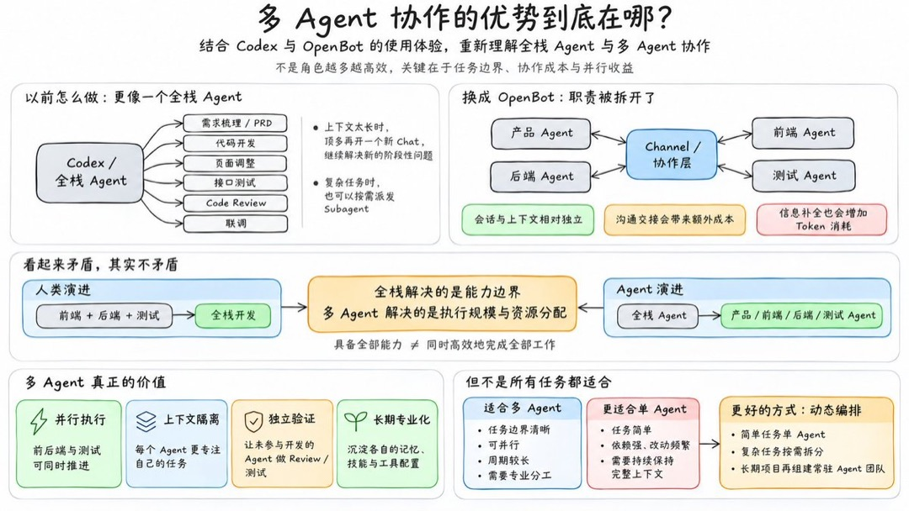

本期速览
01 OpenBot 多 Agent 协作的取舍与动态编排
02 DeepSeek Harness 子 Agent 独立上下文
03 Claude Code 团队的验证流程四步法
04 FrontierHarness 评测 22 个 Coding Agent
01｜OpenBot 多 Agent 协作的取舍与动态编排
来源（X） · @meow2149 · 2026-11-27 13:02
最近在深度使用 OpenBot 的过程中，我一直在思考这个问题。
以前完成一个开发需求，我基本上只需要用 Codex。从梳理产品需求、编写 PRD，到代码开发、通过 Computer Use 调整页面、调用接口测试、Code Review，甚至是涉及多个系统、需要与其他研发同事反复联调的复杂需求，都可以顺畅地交给它来完成。
如果当前会话的上下文积累得太多，或者进入了一个相对独立的任务阶段，也不必硬塞在同一个窗口里，顶多再开一个全新的 Chat，用干净的上下文继续解决新问题。遇到复杂子任务，Codex 自己也会按需派发 Subagent 去并行处理，整体节奏非常连贯。
而换到 OpenBot 之后，我可以将这些工作拆开，分别交给产品 Agent、前端 Agent、后端 Agent 和测试 Agent，让它们组成一个相对完整的研发团队。
分工确实更明确了，但与此同时，也引入了非常直观的协作成本。
每个 Agent 都有相对独立的会话和上下文，虽然可以通过 Channel 进行沟通，但并不意味着它们共享完整的上下文。需求传递、信息同步、任务交接都需要额外的通信，一些隐含的业务细节和踩过的坑，很容易在转述和摘要过程中丢失；为了对齐同一件事，反复补充背景也会带来更多的 Token 消耗。
这让我想到一个很有意思的现象。
过去，软件研发被划分为前端、后端、测试等不同岗位。后来随着技术的发展，全栈开发逐渐流行起来，我们希望一个人能够独立完成更多工作，从而消灭跨岗位的沟通与协作内耗。
可到了 AI 时代，大模型本来已经具备了相当不错的全栈开发能力，我们却又开始把一个全栈 Agent 拆分成产品 Agent、前端 Agent、后端 Agent、测试 Agent，重新构建起一套类似人类的研发组织架构。
乍一看挺矛盾的，甚至有点像开倒车，但仔细想想，其实并不矛盾。
无论是人类走向全栈，还是 AI 走向分工，底层都在绕开当前执行单元的最大瓶颈。
人类卷全栈，是因为人脑之间的通信带宽太低、跨人沟通和排期协同的成本极高，而单个工程师一旦吃透业务，大脑里自带连贯的长期记忆；全栈是用便宜的内部记忆，换掉了昂贵的外部沟通。
AI 刚好相反。模型之间同步文本的成本相对可控，但单个上下文窗口的有效注意力非常脆弱，无关信息越堆越多，推理质量就会明显下滑。
换句话说，全栈解决的是能力边界的问题，而多 Agent 协作解决的是执行规模、注意力和资源分配的问题。人类的岗位分工，很大程度上受限于个人的知识、精力与时间；而 Agent 的角色分工，并不一定是因为它缺乏其他岗位的能力，更多是为了合理分配上下文、计算资源和任务职责。
具备完成所有工作的能力，和同时高效地完成所有工作，本身就是两件不同的事情。
抛开模拟人类公司架构的表象，多 Agent 协作真正有价值的地方，我认为主要有四个。
第一，并行执行。
当接口协议和任务边界足够明确时，前端开发、后端开发和测试用例编写可以同时进行，从线性串行真正走向并行，用更多的计算资源换取更短的交付时间。
第二，上下文隔离。
这是最直接的工程降噪。测试 Agent 不需要看前端调了二十轮样式的报错日志，不同 Agent 可以专注于各自的任务，避免大量无关代码、工具调用和测试日志污染上下文。这对于大型项目和长周期任务尤其重要。
第三，独立验证。
在同一个会话里让 Agent 写完代码再自己做 Review 和测试，很容易陷入既当运动员又当裁判的思维惯性，顺着刚才的解题思路默认逻辑没错，从而放过隐藏 Bug。让一个没有参与代码编写、上下文干净的 Agent 负责审查和测试，才能以相对独立的视角发现开发过程中忽略的问题。
第四，长期专业化。
不同 Agent 可以拥有各自的长期记忆、专属 Skills、最小权限的工具配置，甚至搭配不同的模型。更窄的工具面和更精简的指令，也能显著降低指令冲突和工具调用幻觉。对于长期运行的项目，各自沉淀下来的领域知识和项目经验，也是临时创建的 Subagent 不一定具备的优势。
但多 Agent 协作并不天然意味着更高的效率。
如果一个需求本身并不复杂，或者任务之间存在很强的依赖关系，需要频繁同步信息、反复修改接口，硬上一套固定分工的 Agent 团队，通信成本和额外 Token 很快就会把收益吃掉。这种场景下，一个掌握完整需求背景的全栈 Agent，往往更快、更稳、也更省 Token。
而且，上面提到的并行执行、上下文隔离和独立验证，其实通过 Codex 灵活开启全新会话、按需派发 Subagent 也能覆盖大半，并不一定非要提前组建一个固定的 Agent 团队。
所以相比死板的固定角色分工，我目前更倾向于动态的任务编排：
▪︎ 普通需求，由一个全栈 Agent 独立完成，上下文重了或进入新阶段，就灵活开启全新会话继续推进。
▪︎ 复杂需求，根据任务的依赖关系，按需派发用完即焚的 Subagent 并行处理、隔离噪音。
▪︎ 长期项目，再考虑组建拥有独立记忆、专业知识和明确职责的常驻 Agent 团队。
这几种方式并不冲突，甚至可以相互结合。常驻的 Agent 本身也可以具备全栈能力，并根据实际需求灵活调整自己的职责。
衡量多 Agent 协作是否高效，最终还是要看交付质量、完成时间和资源消耗，而不是团队里有多少个 Agent、拆出了多少种角色。
我也希望未来的 Agent 编排系统，能够充分利用 AI 本身的能力特点，而不是简单照搬人类的组织架构。
毕竟我们好不容易让 AI 具备了全栈能力，总不能最后又让它们把大量时间和 Token，花在开会、同步进度和跨部门沟通上吧。

02｜DeepSeek Harness 子 Agent 独立上下文
来源（X） · @antiAIvo · 2026-11-27 16:55
在 DeepSeek Harness 里
主 Agent 派 subagent-spawn-in-process 去查代码时
哪怕子 Agent 在里面翻了 50 个文件、报错试错十几轮
主 Agent 的上下文依然干干净净，最后只收子Agent结果
这其实就是 Linux 里的「独立虚拟内存」
Linux 里每个冷启动的新进程
都有自己独立的一块虚拟内存空间
子进程在自己房间里怎么折腾甚至崩溃
都不会污染父进程的内存
引用内容
纳米AI @antiAIvo
其实看懂 DeepSeek Harness的 Subagent 底座
只需要 6 个经典的 Linux 进程概念
因为它的核心设计就一句话：
把子 Agent 抽象成 Linux 里的“后台子进程”
主 Agent 只管拿一个类似 PID（进程号）的 ID 去遥控它
接下来，用Linux 进程机制与 DSH 源码的 1:1 映射
来学习下DSH，也顺便复习下操作系统
03｜Claude Code 团队的验证流程四步法
来源（X） · @Charles77xixi · 2026-11-27 12:15
1.首选端到端测试，跑实际的用户体验
2.提交代码前跑各种lint和单侧
3.对diff的内容触发对应的测试清单，这里的清单是按照过去的事故沉淀下来的
4.把每次测试漏掉的问题都沉淀下来，作为测试系统的优化补充，定期清理过期内容
https://claude.dev/blog/how-the-claude-code-team-thinks-about-verification/
04｜FrontierHarness 评测 22 个 Coding Agent
来源（X） · @xiaohuiyuan · 2026-11-27 15:46
最近 FrontierHarness Eval做了一次同台评测：22 个 Coding Agent，统一接入 5 个开源模型，跑 62 道 Terminal-Bench 终端任务，每题重复 4 次，比通过率、耗时和每次通过的成本。结果是这些Harness并不能大幅拉开差距，任务跑得好坏，还是主要取决于模型。
这期视频我拆解了一下评测结果，尝试分享三点：任务能不能做成，主要由什么决定；Harness 真正影响的是什么；既然人人都能手搓 Harness，什么方向还值得投入。
如果你正在纠结选哪个 Coding Agent，或者想自己动手做一个，希望这期能帮你少走一点弯路，把Token和时间花在真正起作用的地方。
内容导航
00:00 为什么关注这份评测
00:31 22个工具同台竞技
02:55 时间和成本差在哪
05:13 换模型和换壳谁更关键
07:17 差距小意味着什么
09:49 值得自己做的方向
11:15 结论边界与我的心得
#AI #Agent #Harness #大模型 #AI工具
05｜Google AI 会员权益接入四个 CLI 工具
来源（X） · @HeLi8866 · 2026-11-27 16:43
开通 Google AI 会员的兄弟，你可能一直在浪费自己的会员权益！！
→ 最高 30TB 云存储空间
→ 100 美元谷歌云抵扣金
→ 25000 点视频生成积分
→ 最高 2000 个 GPU 计算单元
如果你开了 Pro 或 Ultra 会员，却只拿来跟 Gemini 聊天，那就太亏了！
把下面这 4 个工具接入 Antigravity，一个对话窗口就能充分利用这些会员权益⬇️
1. Google Workspace CLI
专门面向开发者和 AI Agent 的命令行工具。
打通 Google Drive、Gmail、Docs、Sheets 等服务，让 AI 直接管理你的云端文件和工作资料。
https://github.com/googleworkspace/cli
2. Google Colab CLI
谷歌官方推出的命令行工具。
Pro 每月提供 200 个计算单元，Ultra 则提供 1000～2000 个。
直接通过终端申请 A100、H100 等云端 GPU，运行 Python 脚本、训练模型，任务结束后自动释放计算资源，连 Notebook 网页都不用打开。
https://github.com/googlecolab/google-colab-cli
3. Google Developer Program（官方）
很多人容易忽略的一项会员权益：每月谷歌云抵扣金。
・Pro：$10 ・Ultra 5x：$40 ・Ultra 20x：$100
激活权益并绑定 GCP 账单账户，就能用于抵扣 Gemini API、Google Cloud 等符合条件的服务费用。
https://developers.google.com/program
4. gflow-cli
第三方开源 CLI + MCP 工具，直接让 AI Agent 接管 Google Flow 的创作流程。
・Pro 每月 1000 积分 ・Ultra 每月 10000～25000 积分 ・每天还有 50 点免费积分
接入 Antigravity 后，用自然语言就能调用 Veo、Omni 生成视频，调用 Nano Banana 生图，并将生成的素材保存到本地。
https://github.com/ffroliva/gflow-cli
云端借显卡跑模型、调用 API、批量生图拍视频、管理云盘文件，全部可以整合到一个 AI 工作流里。
手里有 Google AI Pro（包括学生优惠套餐）或 Ultra 的兄弟，赶紧检查一下自己的会员权益。
别光给谷歌交钱，连自己已经买到的福利都没用上！🔖
06｜极兔用 AI 视觉识别分拣堵塞
来源（X） · @LiangXiong_chat · 2026-11-27 15:35
极兔速递公布了今年双十一期间AI视觉识别系统的应用情况，用AI检测分拣环节的包裹堵塞问题。
比起让AI陪人聊天，我更看好这种能够直接解决生产问题的应用。
#极兔速递 #人工智能 #物流